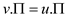

Consider the following directed graph of Figure 24.2 provided in the text book to find the two shortest-path tree.
• Shortest path in any directed graph is not unique and it is possible to have more than one shortest-path tree with same source.
• Shortest path of any vertex v is updated only when shortest path is discovered.
The following is the Figure 1 with first possible shortest-path tree:
The following is the Figure 2 with second possible shortest-path tree:
• In Figure-1 and Figure-2 the dark line indicates the shortest path between all nodes.
• All vertices have the minimum weight between one node to another node.
• A shortest path from root s is directed sub graph
where is the
subset of vertex  and
is
the subset of edge
and
is
the subset of edge .
.
• is the set of vertices that is reachable from source s.
• For all vertexes, the unique
simple path from source to vertex in graph is
shortest path from source to destination.
A weighted directed graph with weight
function is and source
vertex s satisfy the property: for each edge , there is a
shortest path tree from the source s which contains edge
(u, v) and there exists more than one shortest path tree
with source vertex as s which do not contain (u, v)
in its path.
, there is a
shortest path tree from the source s which contains edge
(u, v) and there exists more than one shortest path tree
with source vertex as s which do not contain (u, v)
in its path.
Graph is the collection of vertices V and edges E or it is the pictorial representation of related data in the form of vertices and edges.
Graphs are of two types directed graphs that are the graphs in which edges are represented with arrow from one vertex to other and undirected graphs in which no direction is given.
The property “for each edge, there is a
shortest path tree from the source s which contains edge
(u, v) and there exists more than one shortest path tree
with source vertex as s which do not contain (u, v)
in its path” cannot be true for acyclic graphs since acyclic graphs
have unique edges.
Consider the cyclic graphs:
Example:
Consider the edge to find the path from vertex a to vertex c paths in the graph
would be
And without edge the path can be.
Both the path and are of same weight ((2+3+3) = 8) so both are shortest paths from vertex a to vertex c first contains edge but the second does not contains edge hence it preserves the property.
Let u be the vertex such that is set to a non-NIL value. Then, it is necessary to have s.d>u.d + w(u,s).
Apply INITIALIZE-SINGLE-SOURCE (G, s) for the vertex s such that
the initial distance d[s] = 0 and the distance to the other
vertices that is v is infinite, d[v] =  and
=
NIL.
and
=
NIL.
Only if the edge (u, s) is relaxed, then only is set to non-NILL value.
Suppose p is the path from the vertex s to vertex u in the shortest path tree and let there exist a cycle C formed by following path from s to u such that the edge (u, s) is taken.
It can be concluded that w(C) = w(p)+w(u, s) = u.d + w(u, s)<0 such that a negative weight cycle is formed.
In order to prove, perform induction on the number of relaxations. Since, G is initialized by INITIALIZE-SINGLE-SOURCE (G, s), the vertex in is s and there exists a path from s to itself.
For every vertex a path exists from s to v in
On (n+1)st relaxation, if v.d>u.d+w(u, v) and when v is relaxed, then perform the changes such that . If v is present in and there exists a path from s to u followed by (u, v) = ( , u), then it means that there is a path from s to v in .
The negative weight cycle can be reached from the source s and v is the first vertex that is reachable from the source s. Let the vertices on the path be and there exists a path from s to v. Perform the relaxations to the vertex v and the shortest path estimate will always decrease from infinity because every vertex is encountered for first time.
Since v is the first vertex that is reachable on the cycle, every other vertex will have shortest path estimate set to infinity.
Create the infinite sequence of relaxations by relaxing vertices around the vertices. If the vertex is reached and the shortest path estimates are changed for every relaxation that have been made easier.
Let the vertices on the cycle be , then because the cycle has negative weight.
Thus, update the shortest path estimate of